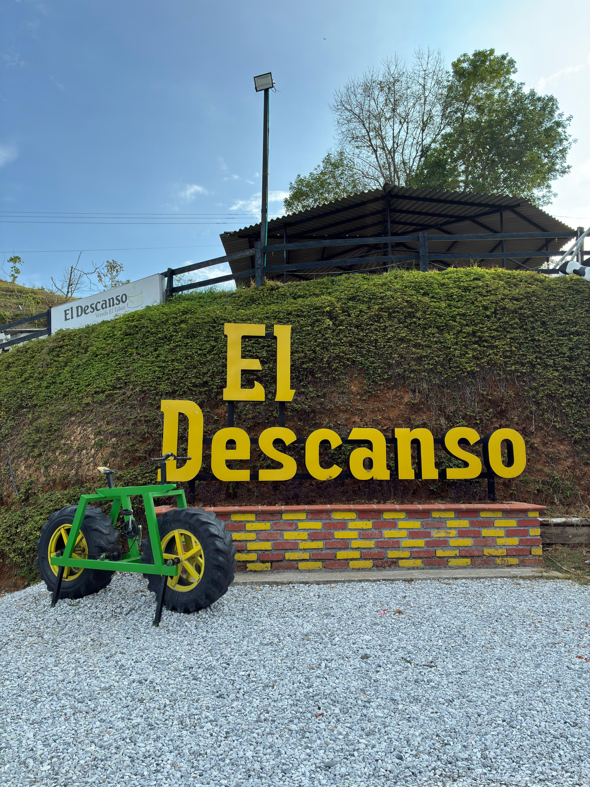
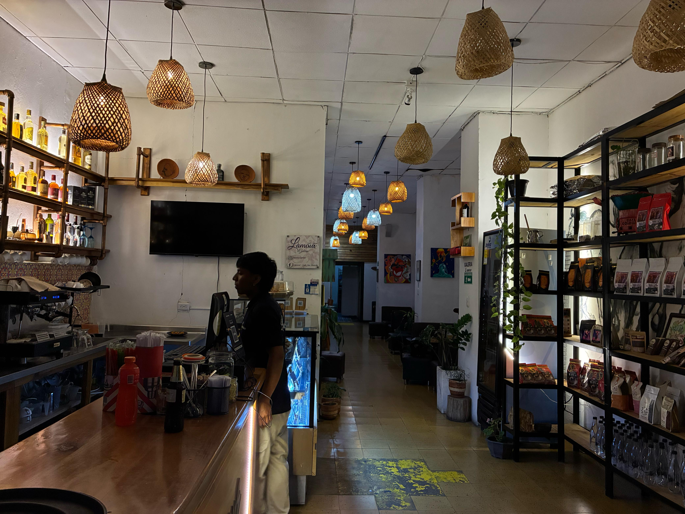
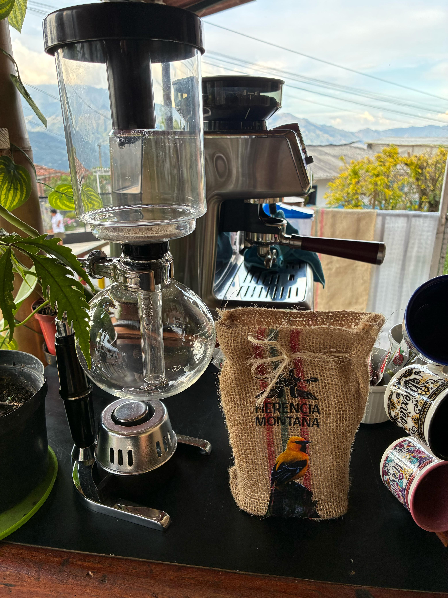

Restaurantes y Mercados Locales
Las siguientes recomendaciones de restaurantes y mercados locales, no solo han sido escogidos por su calidad si no tambien por lo emblematicos que han sido durante los años aca en Riosucio.

El Descanso
Un lugar emblemático a la salida de Riosucio.

L'amour
L'amour no solo es un café, es nuestro motor para seguir adelante apoyando a nuestros artistas locales.

Herencia Montaña
Legado cultivado en la montaña
Aquí irá el mapa interactivo